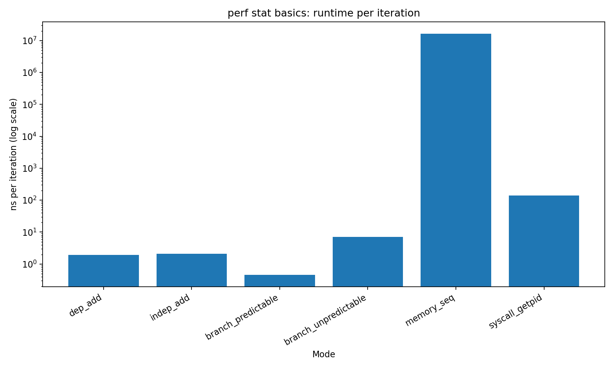
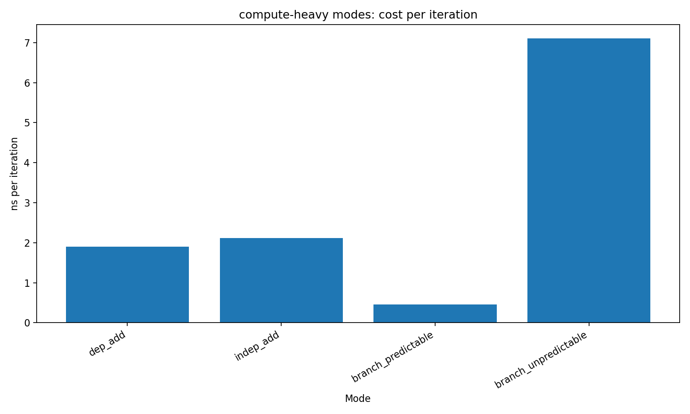
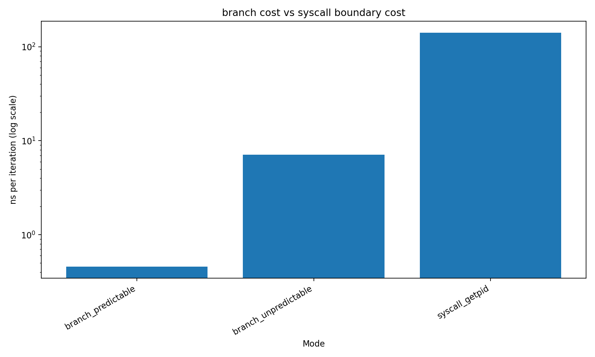
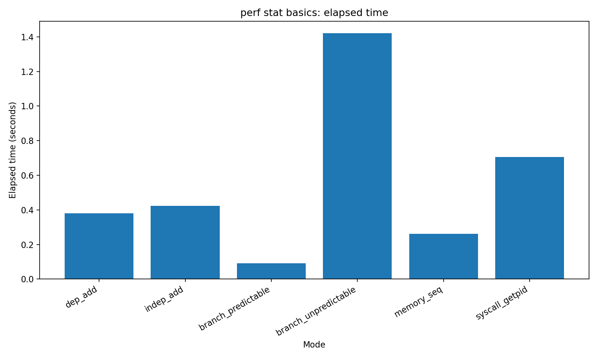

00-perf-stat-basics: understanding CPU behavior through numbers¶
Why this experiment exists¶
When people first use perf stat, they see numbers like:
- cycles
- instructions
- branch-misses
- cache-misses
…but those numbers don’t mean much on their own.
This experiment is designed to answer a simple question:
How do these numbers map to real performance behavior?
Instead of optimizing code, the goal here is to build intuition about how CPUs actually execute programs.
Experimental design¶
We intentionally created several workloads, each representing a different performance characteristic:
| Mode | What it represents |
|---|---|
| dep_add | Dependency chain (low ILP) |
| indep_add | Independent operations (high ILP) |
| branch_predictable | Easy branch prediction |
| branch_unpredictable | Hard branch prediction |
| memory_seq | Memory-bound workload |
| syscall_getpid | Kernel boundary overhead |
Each workload is measured using:
perf stat -e cycles,instructions,branches,branch-misses,cache-references,cache-misses
Runtime comparison¶

What stands out immediately¶
There is a clear hierarchy:
- CPU computation is cheap (~1–2 ns)
- Branch misprediction is expensive (~7 ns)
- Syscalls are much more expensive (~100+ ns)
- Memory access dominates everything (~10⁷ ns scale)
This leads to a fundamental insight:
Not all "slow code" is the same kind of slow.
Dependency vs ILP¶

At first glance:
dep_addis slightly faster thanindep_add
This might seem counterintuitive, because indep_add has higher IPC.
From perf stat:
- dep_add → IPC ≈ 1.2
- indep_add → IPC ≈ 4.4
So why isn’t it faster?
Key insight¶
Higher IPC does not guarantee better performance.
indep_add executes significantly more instructions per iteration.
Even though the CPU can process them in parallel, the total work is larger.
Performance is determined by:
execution time = instructions / IPC
Branch prediction impact¶

Comparing:
- predictable branch: ~0.4 ns
- unpredictable branch: ~7 ns
That’s roughly a 15× slowdown.
From perf stat:
- branch_predictable → ~0% misses
- branch_unpredictable → ~20% misses
What’s happening?¶
Every misprediction causes:
- pipeline flush
- re-fetch and re-decode
- lost speculative work
Key insight¶
Branch misprediction is one of the most destructive events in CPU execution.
Memory behavior¶

The memory_seq workload behaves very differently.
Even though access is sequential:
- Cache miss rate is high
- Dataset exceeds cache capacity
This means:
- CPU is constantly waiting for DRAM
- Execution becomes memory-bound
Key insight¶
Once you miss the cache, CPU speed becomes irrelevant.
Syscall cost¶
The syscall_getpid workload highlights something else entirely:
- Significant portion of time is spent in kernel mode (
sys) - Each iteration crosses the user/kernel boundary
Compared to branch misprediction:
- syscall ≈ 100–150 ns
- branch miss ≈ a few ns
Key insight¶
Crossing the OS boundary has a high fixed cost.
Putting it all together¶
This experiment reveals four distinct performance regimes:
1. CPU-bound¶
- Arithmetic operations
- ILP matters
2. Branch-bound¶
- Control flow dominates
- Prediction accuracy is critical
3. Memory-bound¶
- Cache misses dominate
- Latency hides everything else
4. Kernel-bound¶
- Syscalls / OS interactions
- High fixed overhead
Final takeaway¶
The most important lesson is this:
Performance numbers are not abstract — they describe physical behavior inside the CPU.
Once you can read:
- IPC
- branch-miss rate
- cache-miss rate
you can start answering:
- Why is this slow?
- What kind of slow is it?
What’s next¶
This experiment answers:
“What is slow?”
Next steps:
perf record→ Where is it slow?- Flamegraph → What dominates execution?
- Counter analysis → Why exactly is it slow?
Summary¶
This lab is not about optimization.
It is about building a mental model:
Numbers → Behavior → Explanation
Once that mapping becomes natural, performance analysis stops being guesswork.